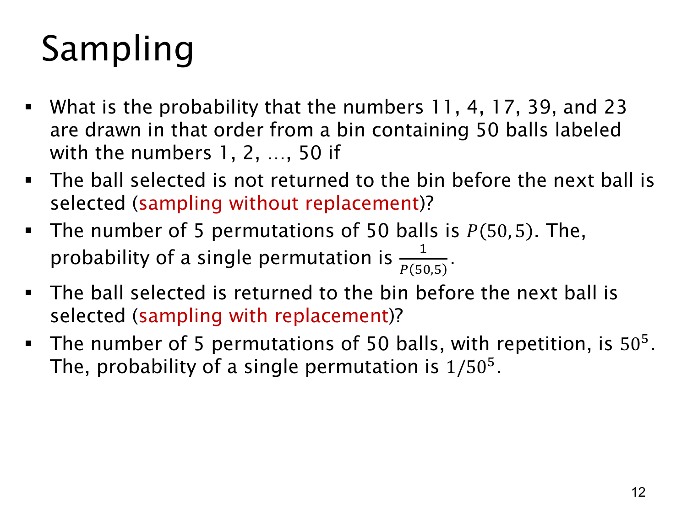

L1.9 · 第 12 页讲解原文
查看这一页课件

放回与不放回抽样
从编号 1 到 50 的球中依次抽 5 次，要求结果按顺序恰好是 11、4、17、39、23。这里事件只包含一个指定序列，不能把这五个数字的其他次序也算进去。
不放回抽样（sampling without replacement）：每次抽出的球不放回，后续可选球数依次减少。所有等可能的有序序列共有
P(50,5)=50⋅49⋅48⋅47⋅46.
因此指定序列的概率是
p=P(50,5)1=501491481471461.
右侧也可以按“前面已经抽对”的条件依次理解。在已抽到 11 的情况下，接下来抽到 4 的机会是 1/49，而不是 1/50。
放回抽样（sampling with replacement）：每次抽完放回并重新均匀抽取，各次都有 50 个选择，允许重复。总结果数为 505，所以
p=5051.
在通常的独立均匀抽样模型下，这也等于五个 1/50 相乘。
本题指定的五个数字互不相同，所以在两种模型中都可能出现。如果指定序列含重复数字，不放回模型中的概率将是 0，而放回模型仍可出现。
若题目只要求抽到这五个数字、不要求次序，不放回的答案会变成 1/(550)；它比本题的指定次序概率大 5! 倍。读题时要同时检查“顺序”和“放回”两项。